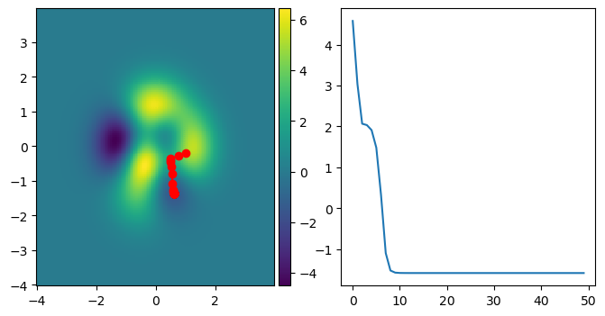
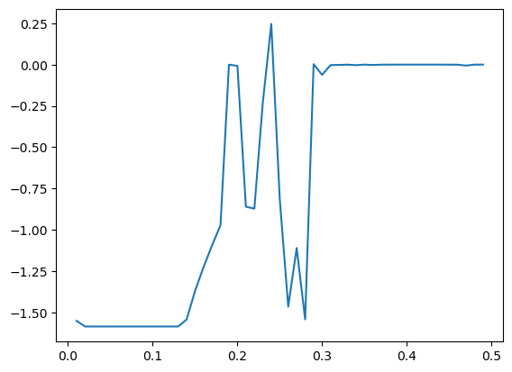
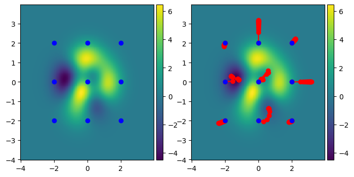
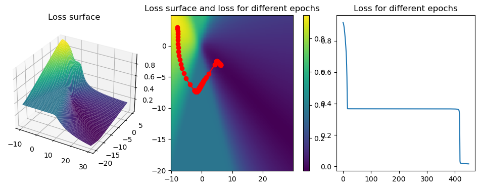
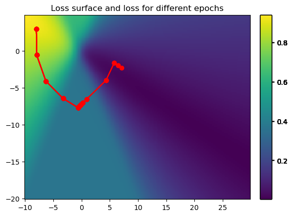
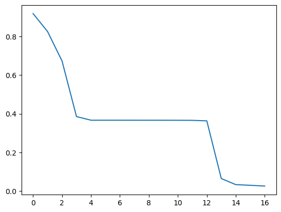
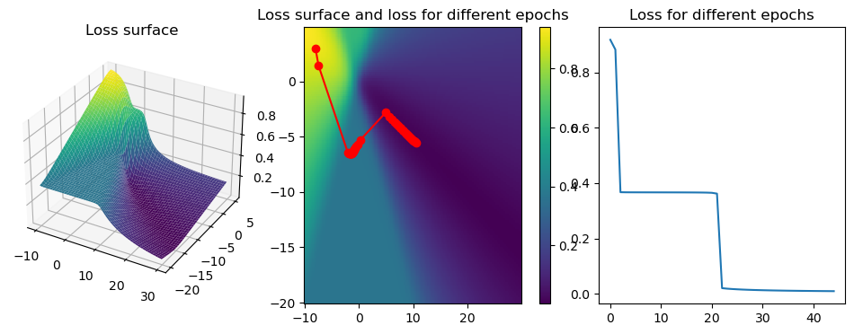
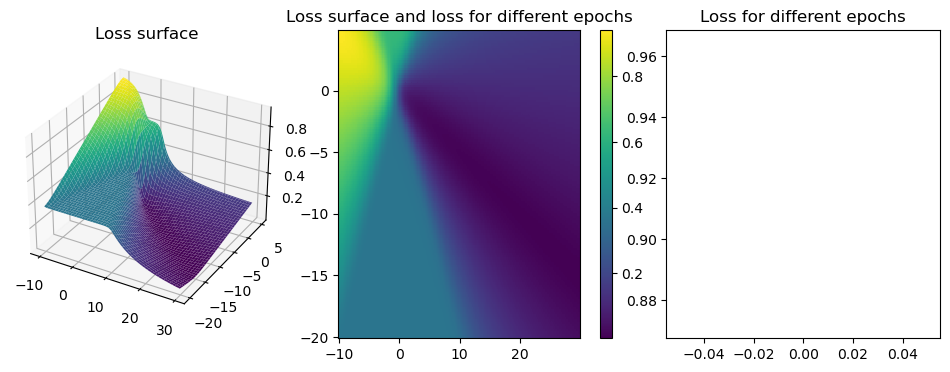

#Some packages needed throughout the article
import torch
from torch import nn, optim
from torch.utils.data import Dataset, DataLoader
import numpy as np
import matplotlib.pyplot as plt
from mpl_toolkits.axes_grid1 import make_axes_locatable
import random
%matplotlib inlineA Gentle (Mathematicians) Introduction to PyTorch and Neural Networks Part 03
Todo: Change intro
In this blog posts, I’d like to introduce a commonly used optimizer for training models such as the logistic model we introduced in the last post.
The structure of this post is as follows: First, we familiarize ourselves a bit with the PyTorch framework. To build on this newly gained knowledge, we build a logistic model with PyTorch and gain some understanding about the binary cross-entropy loss in a theoretical setting. In the final part we will learn how to train our logistic regression model to achieve a good fit on given data.
(Stochastic) gradient descent
Gradient descent in two dimensions
def train_model_GD(iter,lr,f,x1,x2):
COORD = []
for epoch in range(iter):
loss = f(x1,x2)
COORD.append([x1.data,x2.data,loss.data])
loss.backward()
x1.data = x1.data - lr * x1.grad.data
x2.data = x2.data - lr * x2.grad.data
x1.grad.data.zero_();x2.grad.data.zero_()
return np.transpose(np.reshape(COORD,(iter,3)))def f_(x,y):
return 2*(2-x)**2*(torch.exp(-1*(x**2)-(y+1)**2))-15*(1/5*x-x**3-y**3)*torch.exp(-x**2 - y**2)-1/3*torch.exp(-(x + 1)**2 - y**2)X = torch.arange(-4,4,0.05)
Y = torch.arange(-4,4,0.05)
XX,YY = torch.meshgrid(X,Y,indexing='ij')
ZZ = f_(XX,YY)
n = 50
lr = 0.05
x1 = torch.tensor(1.0, requires_grad=True)
x2 = torch.tensor(-0.2, requires_grad=True)
COORD = train_model_GD(n, lr, f_, x1, x2)
fig = plt.figure(figsize = (8,4))
ax1 = fig.add_subplot(121)
im1 = ax1.pcolor(XX, YY, ZZ)
im2 = ax1.plot(COORD[0], COORD[1], 'o-r')
divider = make_axes_locatable(ax1)
cax = divider.append_axes('right', size='5%', pad=0.05)
fig.colorbar(im1, cax=cax, orientation='vertical')
ax2 = fig.add_subplot(122)
im3 = ax2.plot(COORD[2])
x1 = torch.tensor(1.0, requires_grad=True)
x2 = torch.tensor(-0.2, requires_grad=True)LOSS = []
tmp = f_(x1,x2)
LOSS.append([x1,x2,tmp])def lr_grid(grid):
res = []
for elem in grid:
x1 = torch.tensor(1.0, requires_grad=True)
x2 = torch.tensor(-0.2, requires_grad=True)
res.append(train_model_GD(n,elem,f_,x1,x2)[2][-1])
return resgrid = np.arange(0.01,0.5,0.01)
tmp = lr_grid(grid)print(grid[np.argmin(tmp)], min(tmp))
plt.plot(grid,tmp)0.04 -1.5846603[<matplotlib.lines.Line2D at 0x20241825b80>]
Grid search initial values
def iv_grid(n):
RES = []
for j in range(-2*n,2*n+1,2):
for i in range(-2*n,2*n+1,2):
RES.append(train_model_GD(20,0.1,f_,torch.tensor(i/n,requires_grad=True),torch.tensor(j/n,requires_grad=True)))
return RESn=1
tmp = iv_grid(n)fig = plt.figure(figsize = (8,4))
ax1 = fig.add_subplot(121)
im1 = ax1.pcolor(XX, YY, ZZ)
for i in range(np.shape(tmp)[0]):
im2 = ax1.plot(tmp[i][0][0], tmp[i][1][0], 'o-b')
divider = make_axes_locatable(ax1)
cax = divider.append_axes('right', size='5%', pad=0.05)
fig.colorbar(im1, cax=cax, orientation='vertical')
ax2 = fig.add_subplot(122)
im3 = ax2.pcolor(XX, YY, ZZ)
for i in range(np.shape(tmp)[0]):
im4 = ax2.plot(tmp[i][0], tmp[i][1], 'o-r')
im5 = ax2.plot(tmp[i][0][0], tmp[i][1][0], 'o-b')
divider = make_axes_locatable(ax2)
cax = divider.append_axes('right', size='5%', pad=0.05)
fig.colorbar(im1, cax=cax, orientation='vertical');
Stochastic gradient descent in two dimensions
Gradient descent for logistic regression
# Create a dataset class that produces our example data
class Data_2(Dataset):
def __init__(self, soft_max=False,n = 40):
step = 4/n
self.x = torch.arange(-2, 2, step = step).view(-1, 1)
if soft_max:
self.y = torch.zeros(self.x.shape[0])
else:
self.y = torch.zeros(self.x.shape[0], 1)
self.y[self.x[:, 0] > 0.5] = 1
if soft_max:
self.y = self.y.type(torch.LongTensor)
self.len = self.x.shape[0]
def __getitem__(self, index):
return self.x[index], self.y[index]
def __len__(self):
return self.len
def plot_data_2(data, model = None, est_line=False, soft_max=False):
if est_line:
plt.plot(data.x,
torch.sigmoid(list(model.parameters())[0].item() * data.x + list(model.parameters())[1].item()),
color='black',
label='estimated decision boundary')
if soft_max:
X = data[:][0]
y_label = ['yhat=0', 'yhat=1']
y_color = ['r', 'b']
Y = []
for w, b, y_l, y_c in zip(model.state_dict()['0.weight'], model.state_dict()['0.bias'], y_label, y_color):
Y.append((w * X + b).numpy())
plt.plot(X.numpy(), (w * X + b).numpy(), y_c, label=y_l)
plt.plot(data.x.numpy()[(data.y == 0)], data.y.numpy()[(data.y == 0)], 'ro', label="class 0")
plt.plot(data.x.numpy()[(data.y == 1)], data.y.numpy()[(data.y == 1)], 'bo', label="class 1")
plt.legend()
plt.ylim(-0.5, 3)
plt.show()W = torch.arange(-10,30,0.2)
B = torch.arange(-20,5,0.2)
WW,BB = torch.meshgrid(W,B,indexing = 'ij')data_2 = Data_2(n=60)
loss = nn.MSELoss()
def wb_loss(w,b):
yhat = torch.sigmoid(data_2.x*w+b)
return loss(yhat,data_2.y)count_j = 0
ZZ = torch.zeros_like(WW)
for w0,b0 in zip(WW,BB):
count_i = 0
for w1,b1 in zip(w0,b0):
ZZ[count_j,count_i] = wb_loss(w1,b1).detach()
count_i += 1
count_j += 1w0 = torch.tensor(-8.0,requires_grad=True)
b0 = torch.tensor(3.0,requires_grad=True)coord = train_model_GD(450,20,wb_loss,w0,b0)fig = plt.figure(figsize= (12,4))
ax1 = fig.add_subplot(131, projection = '3d')
im1 = ax1.plot_surface(WW,BB,ZZ, cmap = 'viridis')
ax1.set_title('Loss surface')
ax2 = fig.add_subplot(132)
im2 = ax2.pcolor(WW,BB,ZZ)
im3 = ax2.plot(coord[0],coord[1],'-or')
divider = make_axes_locatable(ax2)
cax = divider.append_axes('right', size='5%', pad=0.2)
fig.colorbar(im2, cax=cax, orientation='vertical')
ax2.set_title('Loss surface and loss for different epochs')
#
ax3 = fig.add_subplot(133)
im4 = ax3.plot(coord[2])
ax3.set_title('Loss for different epochs');
Stochastic gradient descent full batch
def forward(x,w,b):
return torch.sigmoid(x*w+b)
def train_model_SGD(epochs, lr, w,b, plot_coords = False):
COORD = []
LOSS = []
loss = nn.MSELoss()
if plot_coords:
col = ['blue' if i%2==0 else 'red' for i in range(epochs)]
fig = plt.figure()
ax1 = fig.add_subplot(111)
im1 = ax1.pcolor(WW,BB,ZZ)
for epoch in range(epochs):
yhat = forward(data_2.x,w,b)
LOSS.append(loss(yhat,data_2.y).data)
COORD.append([w.data,b.data])
for x,y in zip(data_2.x,data_2.y):
yhat = forward(x,w,b)
l = loss(yhat,y)
l.backward()
w.data = w.data - lr * w.grad.data
b.data = b.data - lr * b.grad.data
w.grad.data.zero_();b.grad.data.zero_()
if plot_coords:
im2 = ax1.plot(np.transpose(np.reshape(COORD,(-1,2)))[0],np.transpose(np.reshape(COORD,(-1,2)))[1], '-or')
divider = make_axes_locatable(ax1)
cax = divider.append_axes('right', size='5%', pad=0.2)
fig.colorbar(im1, cax=cax, orientation='vertical')
ax1.set_title('Loss surface and loss for different epochs')
return LOSS, np.transpose(np.reshape(COORD,(-1,2)))w0 = torch.tensor(-8.0,requires_grad=True)
b0 = torch.tensor(3.0,requires_grad=True)
loss_sgd, coord = train_model_SGD(17,5,w0,b0,True)
plt.plot(loss_sgd)[<matplotlib.lines.Line2D at 0x20246efa940>]
%%timeit
train_model_SGD(17,5,w0,b0)150 ms ± 210 µs per loop (mean ± std. dev. of 7 runs, 10 loops each)Stochastic gradient descent custom batch
def customdataloader(data, batch_size, shuffle = False):
if shuffle:
idx = torch.randperm(data_2.x.nelement())
data.x = data.x.view(-1)[idx].view(data_2.len)
data.y = data.y.view(-1)[idx].view(data_2.len)
data = [[data.x[i:i + batch_size],data.y[i:i+batch_size]] for i in range(0, len(data), batch_size)]
return data
def train_model_SGD_tl(epochs, lr, w,b,trainloader, plot_coords = False):
COORD = []
LOSS = []
loss = nn.MSELoss()
if plot_coords:
col = ['blue' if i%2==0 else 'red' for i in range(epochs)]
fig = plt.figure()
ax1 = fig.add_subplot(111)
im1 = ax1.pcolor(WW,BB,ZZ)
for epoch in range(epochs):
yhat = forward(data_2.x,w,b)
LOSS.append(loss(yhat,data_2.y).data)
COORD.append([w.data,b.data])
for x,y in trainloader:
yhat = forward(x,w,b)
l = loss(yhat,y)
l.backward()
w.data = w.data - lr * w.grad.data
b.data = b.data - lr * b.grad.data
w.grad.data.zero_();b.grad.data.zero_()
if plot_coords:
im2 = ax1.plot(np.transpose(np.reshape(COORD,(-1,2)))[0],np.transpose(np.reshape(COORD,(-1,2)))[1], '-or')
divider = make_axes_locatable(ax1)
cax = divider.append_axes('right', size='5%', pad=0.2)
fig.colorbar(im1, cax=cax, orientation='vertical')
ax1.set_title('Loss surface and loss for different epochs')
return LOSS, np.transpose(np.reshape(COORD,(-1,2)))w0 = torch.tensor(-8.0,requires_grad=True)
b0 = torch.tensor(3.0,requires_grad=True)
#trainloader = DataLoader(dataset=data_2, batch_size=4,shuffle=True)
trainloader = customdataloader(data = data_2,batch_size=2, shuffle= True)
loss_sgd, coord = train_model_SGD_tl(45,5,w0,b0,trainloader)fig = plt.figure(figsize= (12,4))
ax1 = fig.add_subplot(131, projection = '3d')
im1 = ax1.plot_surface(WW,BB,ZZ, cmap = 'viridis')
ax1.set_title('Loss surface')
ax2 = fig.add_subplot(132)
im2 = ax2.pcolor(WW,BB,ZZ)
im3 = ax2.plot(coord[0],coord[1],'-or')
divider = make_axes_locatable(ax2)
cax = divider.append_axes('right', size='5%', pad=0.2)
fig.colorbar(im2, cax=cax, orientation='vertical')
ax2.set_title('Loss surface and loss for different epochs')
#
ax3 = fig.add_subplot(133)
im4 = ax3.plot(loss_sgd)
ax3.set_title('Loss for different epochs');
%%timeit
loss_sgd, coord = train_model_SGD_tl(45,5,w0,b0,trainloader)209 ms ± 19.5 ms per loop (mean ± std. dev. of 7 runs, 1 loop each)ADAM in two dimensions
def train_model_adam(epochs, w,b, trainloader, lr=0.001, plot_coords = False, beta1=0.9, beta2=0.999, eps=1e-8):
mw = torch.tensor(0.0) # First moment estimate
vw = torch.tensor(0.0) # Second moment estimate
mb = torch.tensor(0.0) # First moment estimate
vb = torch.tensor(0.0) # Second moment estimate
COORD = []
LOSS = []
loss = nn.MSELoss()
if plot_coords:
fig = plt.figure()
ax1 = fig.add_subplot(111)
im1 = ax1.pcolor(WW,BB,ZZ)
for epoch in range(epochs):
yhat = forward(data_2.x,w,b)
LOSS.append(loss(yhat,data_2.y).data)
for x,y in trainloader:
""""Start Adam optimizer here"""
yhat = forward(x,w,b)
l = loss(yhat,y)
l.backward()
mw = beta1 * mw + (1 - beta1) * w.data
mb = beta1 * mb + (1 - beta1) * b.data
vw = beta1 * vw + (1 - beta1) * w.data
vb = beta1 * vb + (1 - beta1) * b.data
mw_hat = mw / (1 - beta2 ** epoch)
mb_hat = mb / (1 - beta2 ** epoch)
vw_hat = vw / (1 - beta2 ** epoch)
vb_hat = vb / (1 - beta2 ** epoch)
w.data -= lr * mw_hat / (np.sqrt(vw_hat) + eps)
b.data -= lr * mb_hat / (np.sqrt(vb_hat) + eps)
COORD.append([w.data,b.data])
w.grad.data.zero_();b.grad.data.zero_()
if plot_coords:
im2 = ax1.plot(np.transpose(np.reshape(COORD,(-1,2)))[0],np.transpose(np.reshape(COORD,(-1,2)))[1], '-or')
divider = make_axes_locatable(ax1)
cax = divider.append_axes('right', size='5%', pad=0.2)
fig.colorbar(im1, cax=cax, orientation='vertical')
ax1.set_title('Loss surface and loss for different epochs')
return LOSS, np.transpose(np.reshape(COORD,(-1,2)))w0 = torch.tensor(-8.0,requires_grad=True)
b0 = torch.tensor(3.0,requires_grad=True)
loss_adam, coord = train_model_adam(30,w0,b0,trainloader,1)fig = plt.figure(figsize= (12,4))
ax1 = fig.add_subplot(131, projection = '3d')
im1 = ax1.plot_surface(WW,BB,ZZ, cmap = 'viridis')
ax1.set_title('Loss surface')
ax2 = fig.add_subplot(132)
im2 = ax2.pcolor(WW,BB,ZZ)
im3 = ax2.plot(coord[0],coord[1],'-or')
divider = make_axes_locatable(ax2)
cax = divider.append_axes('right', size='5%', pad=0.2)
fig.colorbar(im2, cax=cax, orientation='vertical')
ax2.set_title('Loss surface and loss for different epochs')
#
ax3 = fig.add_subplot(133)
im4 = ax3.plot(loss_adam)
ax3.set_title('Loss for different epochs');
print(coord[0][:5])[nan nan nan nan nan]